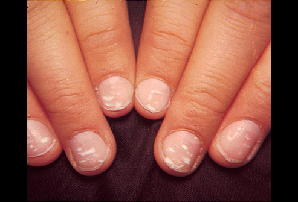

You are a doctor practicing medicine in Union County, NC. A 30 year old woman comes into your office complaining of vomiting and diarrhea. You must determine what is wrong with this woman, how she became ill, and the best method to treat her. You must also warn her of what could happen with continued exposure or without proper treatment.
We observed severak key symptoms that helped us determine our hypothesis.
